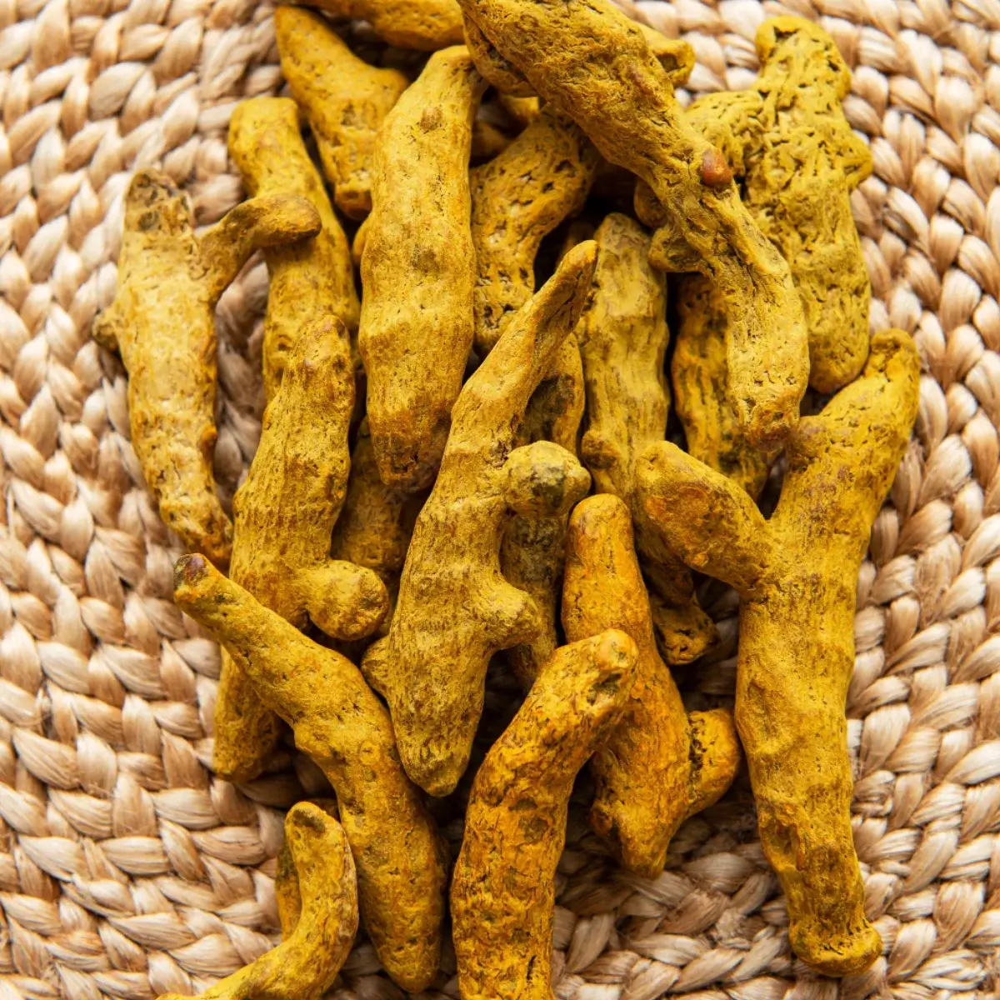
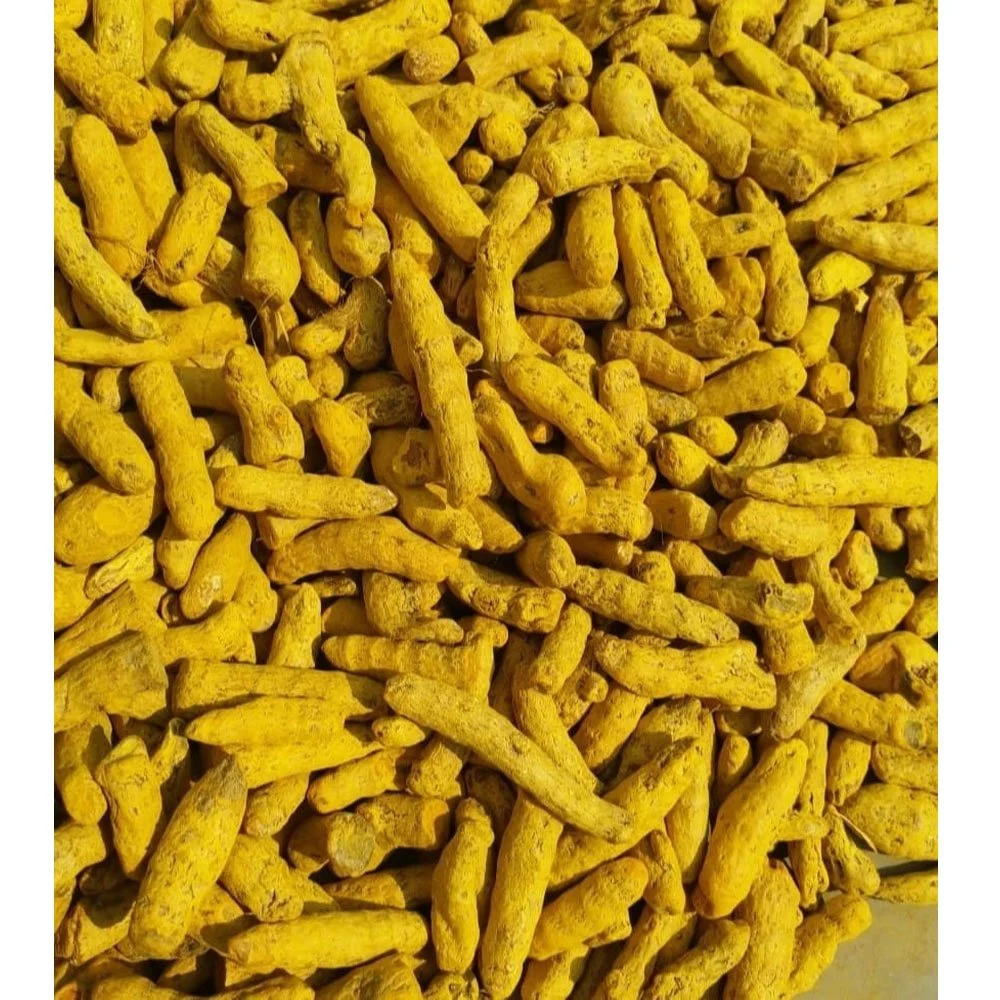
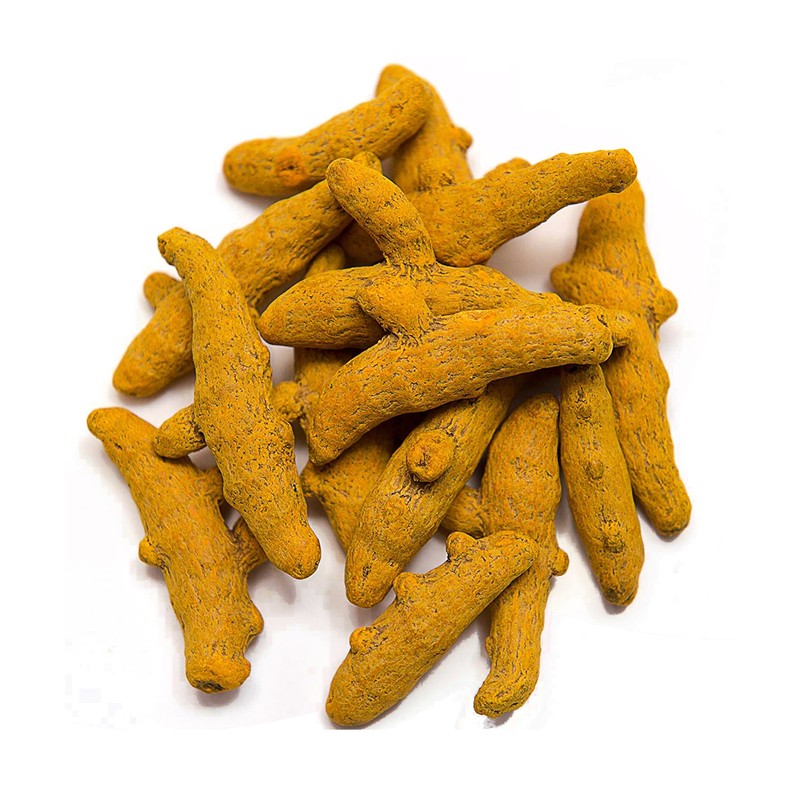
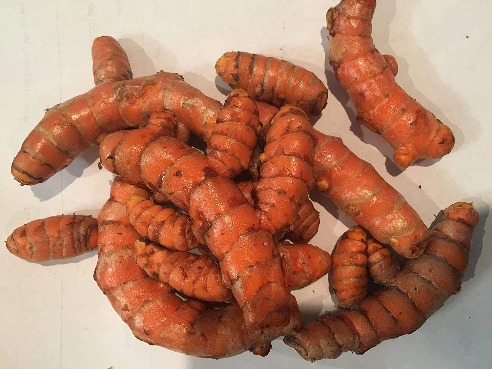
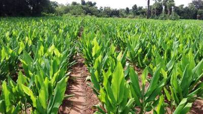

Erode, Tamil Nadu is globally recognised as the world’s turmeric capital, contributing over 40% of India’s total turmeric production. The region’s unique climate, fertile soil, and generational farming expertise produce turmeric with naturally high curcumin content — the key quality marker for food, pharmaceutical, and nutraceutical buyers worldwide.
CM Trading & Exports sources turmeric directly from verified farmers and FSSAI-licensed processing units in Erode. Every batch is quality-checked for curcumin percentage, moisture content, and cleanliness before shipment. We supply polished fingers, raw dried turmeric, and finely milled powder in various grades, packed to international export standards.
Whether you need bulk container loads for spice manufacturing, or retail-ready ground powder for distribution, we handle sourcing, quality inspection, packaging, and documentation end-to-end.
Key Features & Advantages
High Curcumin Content
Erode turmeric naturally contains 2.5%–5.5% curcumin — among the highest globally — ideal for pharmaceutical, nutraceutical, and premium food applications.
Vibrant Natural Colour
Rich golden-yellow hue with high colouring power. Consistent colour profile across batches for food manufacturing, cosmetics, and textile uses.
100% Natural & Pure
No artificial colours, additives, or preservatives. Hygienically processed in certified units with pesticide residue tested to destination country MRLs.
Verified Source Farmers
We work only with trusted and verified growers in the Erode farming belt. Full traceability from farm to port is maintained for every batch.
Custom Packaging
Available in 25 kg or 50 kg jute / HDPE bags, or custom retail packaging with your brand label. Multi-layer moisture-proof inner lining as standard.
Complete Documentation
Phytosanitary certificate, Certificate of Origin, Lab test reports (CoA), Commercial Invoice & Bill of Lading provided with every consignment.
Product Varieties
Polished Turmeric Fingers
Most exported form — premium grade
- Whole dried rhizomes, machine or hand polished for a bright surface
- Bold finger size preferred by spice millers and food processors globally
- Curcumin: 3.0%–5.5% depending on grade
- Moisture: Max 10% (well-dried for long-distance shipping)
- Best for: spice mills, food manufacturers, pharmaceutical extraction
Turmeric Powder
Finely milled, uniform particle size
- Finely ground from premium dried fingers in hygienic certified units
- Mesh size: 60–100 mesh as per buyer specification
- Curcumin: 2.5%–4.5% (high-curcumin powder available on request)
- Supplied in 25/50 kg bulk bags or custom retail pouches
- Best for: retail brands, food processors, spice distributors
Dried / Raw Turmeric
Unpolished dried rhizomes
- Sun-dried or machine-dried whole rhizomes, unpolished bulk grade
- More economical — ideal for buyers sourcing for further processing
- Curcumin: 2.5%–4.0%
- Cleaned & sorted; free from soil, mould, and insect damage
- Best for: processors, extraction units, oleoresin manufacturers
High Curcumin Varieties
Pharmaceutical-grade selection
- Specially selected varieties: BSR-2, Alleppey, Rajapore — naturally high curcumin
- Curcumin: 4.5%–5.5% guaranteed (lab tested batch-by-batch)
- Certificate of Analysis (CoA) provided with every shipment
- Preferred by pharmaceutical manufacturers and supplement brands
- Best for: nutraceuticals, herbal supplements, cosmetic extraction
Product Gallery

Polished Turmeric Fingers
Premium whole rhizomes, carefully cleaned & polished for export standards.

Double Polished Fingers
High-sheen variety with rich golden colour and intense aroma.

Bulk Dried Turmeric
High-volume dried turmeric for processing into powder or whole-finger export.

Fresh Turmeric Roots
Farm-fresh roots harvested at peak maturity for maximum curcumin levels.

Direct from Erode Farms
Sourced from trusted farmers in the Erode region using sustainable practices.
More product images available on request
Request ImagesTechnical Specifications
| Parameter | Specification |
|---|---|
| Origin | Erode District, Tamil Nadu, India |
| Botanical Name | Curcuma longa |
| Curcumin Content | 2.5% min – 5.5% max (grade dependent) |
| Moisture Content | Max 10–12% at time of loading |
| Total Ash | Max 7% |
| Volatile Oil | Min 2.5% v/w (fingers); Min 1.5% (powder) |
| Extraneous Matter | Max 1% |
| Available Forms | Polished Fingers • Dried Unpolished • Powder (60–100 mesh) |
| Packaging | 25 kg / 50 kg jute or HDPE bags; custom retail packs available |
| Min. Order Qty | 1 Metric Ton (samples: 5–20 kg) |
| Port of Loading | Chennai / Tuticorin (Thoothukudi) |
| Certifications | ISO • FSSAI • Spice Board of India |
| Documentation | Commercial Invoice • Packing List • B/L • CoO • Phytosanitary Cert • Lab Report (CoA) |
| Payment Terms | 50% advance + 50% before shipment; LC at sight available |
Interested in Erode Turmeric?
Contact us for pricing, samples, and bulk enquiries. We respond within 24 hours.